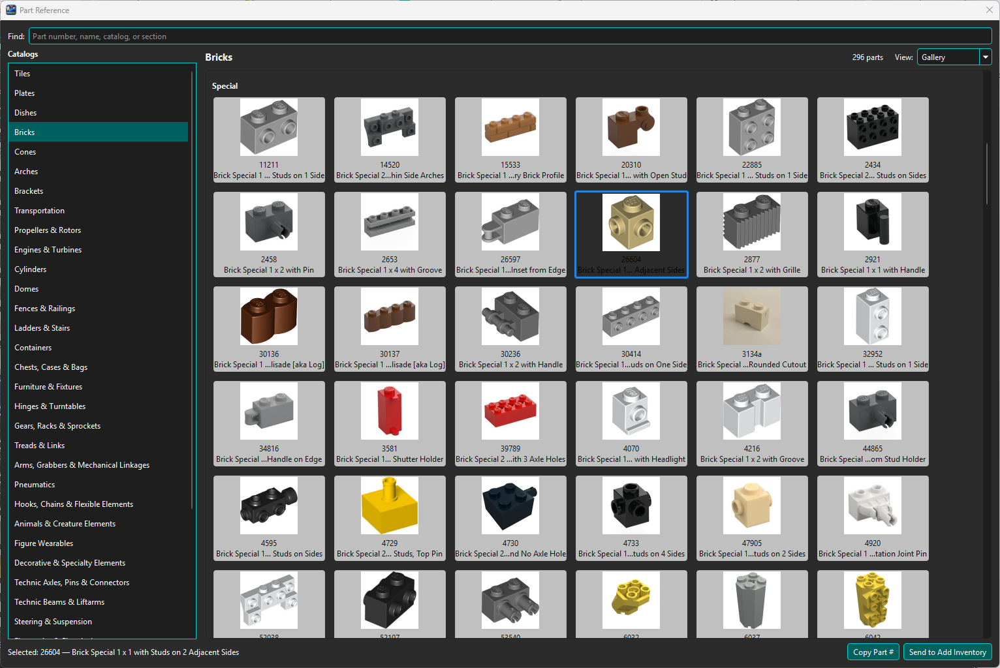
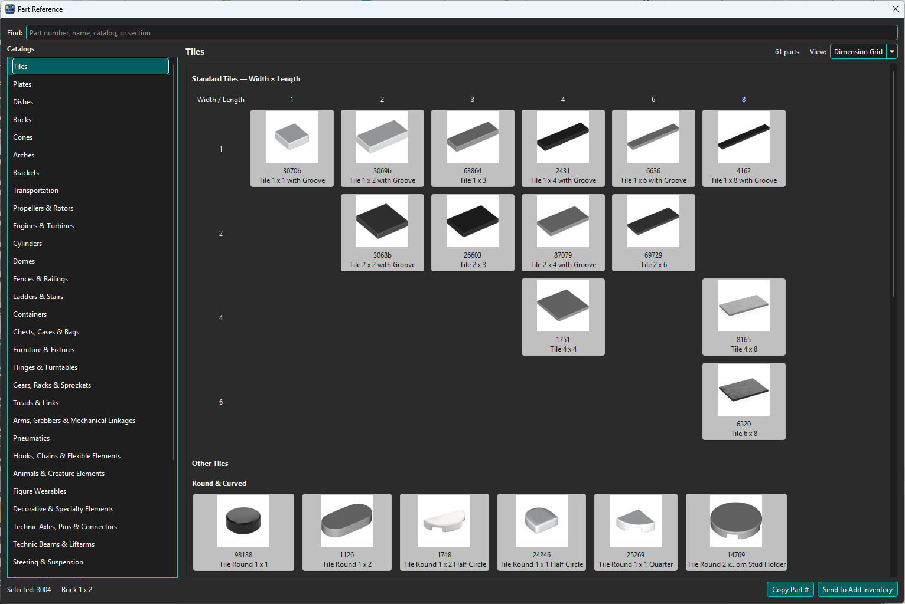

Open Tools → Part Reference... for a persistent, non-modal visual reference to common parts. The bundled manifest contains 2,955 entries organized into 37 catalog families.
Select a catalog on the left. Gallery view groups cards by section. Supported families also offer Dimension Grid, arranging standard parts by dimensions; parts outside the grid remain available below it.

Gallery view groups visually recognizable Part cards by family and section.

Dimension Grid arranges supported standard parts by width and length.
Find searches Part number, name, catalog, and section. Reference images use the normal local cache and may be retrieved through Rebrickable when configured. Printed parts remain exact catalog identities rather than being reduced to an unprinted design.
Select a card to make its Part number active. Use Copy Part # or Send to Add Inventory. Right-clicking a card selects that card before presenting the same commands.
The dialog can stay open while you work elsewhere in BrickSuite. Geometry, splitter position, selected catalog, and each catalog's Gallery/Dimension Grid choice are saved in application settings and restored after closing/reopening the dialog or restarting BrickSuite. Search text and the selected card are not saved for the next application session. F1 while Part Reference is active opens this topic.
Part Reference is curated navigation, not a second authoritative Parts Catalog. If a reference is unavailable in the local catalog, it cannot be added until the applicable catalog data is imported.